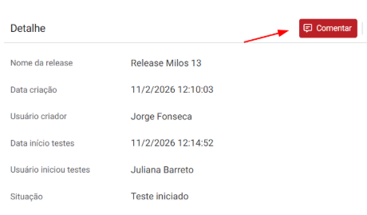
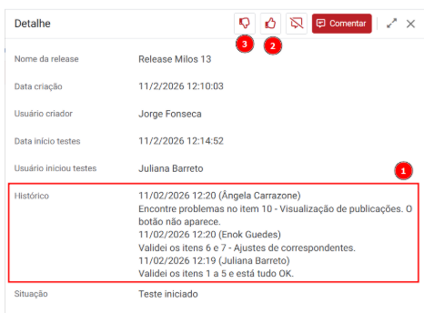
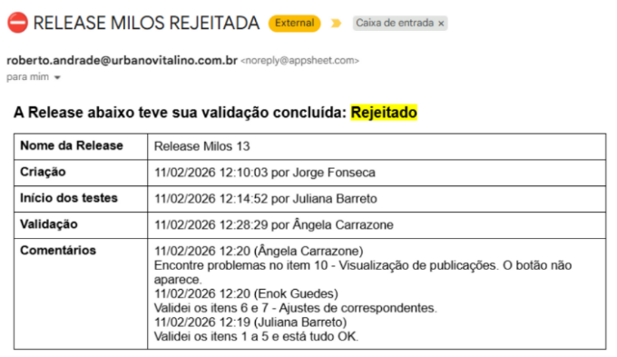

A) Desenvolvedor transfere a release para o ambiente de homologação e inclui um novo registro de deploy, informando o nome (1) e anexando o arquivo com as mudanças (2):

B) Imediatamente, a equipe de validação recebe a notificação abaixo informando que existe uma nova release para análise:

C) Qualquer integrante da equipe de validação acessa o sistema para registrar o início dos testes, clicando no botão "Iniciar teste" e travar a release para edição:

D) Uma vez iniciados os testes, o sistema abre a opção de incluir comentários apresentando o botão "Comentar": 
E) Qualquer integrante da equipe de validação pode acessar o sistema e registrar seus comentários, de forma a constituir um histórico (1) que não pode ser editado. Além disso, aparecem os botões de Aprovar (2) ou Rejeitar (3) a release: 
F) Ao APROVAR a release, todos recebem a notificação abaixo e nossa área de DevOps providenciará a transferência de Homologação para Produção:

G) Ao REJEITAR a release, todos recebem a notificação abaixo e caberá ao desenvolvedor os ajustes necessários e lançamento de uma nova release: 